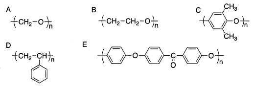

令和5年度 問16 高分子化学
次に示す化学構造を持つ高分子を汎用プラスチックとエンジニアリングプラスチック（エンプラ）に分類したとき、適切なものはどれか。

| 選択肢 | 汎用プラスチック | エンプラ | |
|---|---|---|---|
|
①
|
A、B、C | D、E | |
|
②
|
A、B、D | C、E | |
|
③
|
B、D | A、C、E | |
|
④
|
A、D | B、C、E | |
|
⑤
|
B、D、E | A、C | |
正答
③ 汎用プラスチック：B、D、エンプラ：A、C、E
汎用プラスチックは安価で大量生産に向いたプラスチックです。更に機械的強度を向上させたものがエンジニアリングプラスチック（エンプラ）です。エンプラの中でも耐熱性等を向上させたものはスーパーエンジニアリングプラスチックと呼ばれます。
A～Eに関する名称や性質を以下にまとめました。
| 番号 | 名称 | 略号 | 汎用/エンプラ | 特徴 |
|---|---|---|---|---|
| A | ポリアセタール | POM | エンプラ | 規則正しい構造が作りやすいことから結晶化度が高いため強度・剛性等の機械特性に優れる |
| B | ポリエチレンオキサイド | PEO | 汎用 | 水溶性であり低濃度でも高い粘度を示すため増粘剤として利用できる |
| C | ポリフェニレンエーテル | PPE | エンプラ | ポリスチレンと任意割合で完全相溶できるため耐熱性向上や流動性改善に用いられる |
| D | ポリスチレン | PS | 汎用 | 安価・発泡性・成形性があり汎用材料として用いられる |
| E | ポリエーテルエーテルケトン | PEEK | スーパーエンプラ | 耐熱性、耐薬品性、機械強度、電気絶縁性などに優れており先端分野に用いられる |